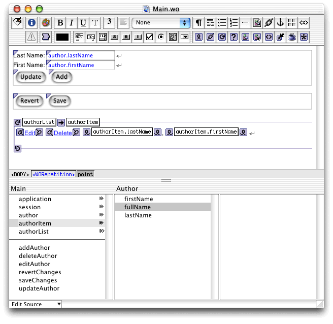
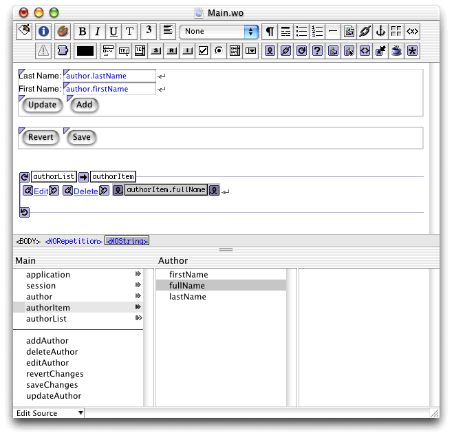
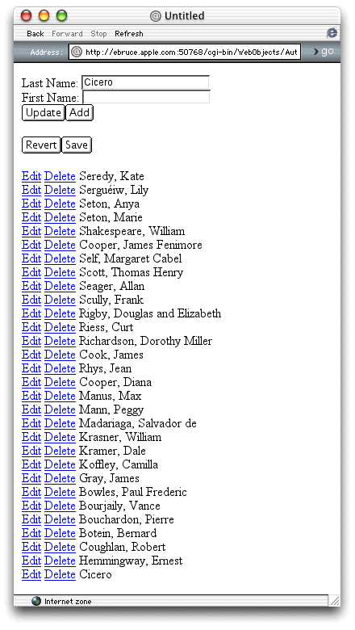

In this section you'll modify Main.wo to
use the fullName property
of Author to display an author's full name.
Main.wo component
in WebObjects Builder. Figure 11-1 shows that WebObjects
Builder recognizes the type of authorItem as Author.
Also, a browser for the Author class appears next to the browser
for the Main class. Notice that the new method, fullName,
is represented as a property of the authorItem variable.
Figure 11-1 Main.wo after adding the fullName derived property to Author.java
authorItem.firstName.value attribute
to authorItem.fullName.
You can now use the drag method to perform the binding because WebObjects
Builder has more information about authorItem than
when it was an EOGenericRecord. Your component should look like Figure 11-2.Figure 11-2 Main.wo using the fullName derived property
Main.wo, and
build and run the application.Figure 11-3 shows that when an author's first name is missing, the comma is not displayed, as it was before.
Figure 11-3 The Authors application using the fullName method to display author information

© 2001 Apple Computer, Inc.